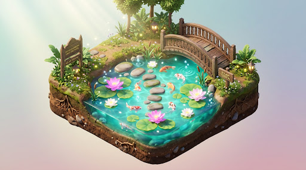
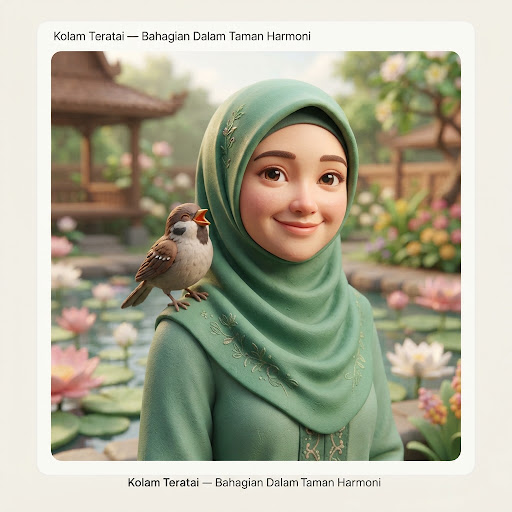

eco
Taman Harmoni • Alam & Ihsan
verified
Pendidikan Islam & Moral Thn 1
Kolam Teratai 🪷
Menghargai Keindahan Flora & Makhluk Air

🪷
Kolam Teratai Bersih
🐟
5/5 Ikan Riang
auto_awesome
Kolam Teratai Sanctuary
Ruang Ihsan Menyayangi Makhluk & Flora

record_voice_over
Ustazah Melur & Si Merbok
“Subhanallah indahnya Kolam Teratai kita! Setiap ciptaan Tuhan berhak disayangi. Ikan-ikan koi dan bunga teratai ini sentiasa bersih jika kita menjaganya bersama. Jom kita uji kefahaman adab terhadap alam sekitar!”
favorite
Kasih Sayang Terhadap Alam
military_tech
+50 XP
Uji Minda Ihsan: Menjaga Kebersihan Kolam & Hidupan Air
Semasa bermain di jambatan kayu Kolam Teratai bersama rakan-rakan, apakah tindakan terbaik jika melihat daun kering atau sisa bertaburan di tepi kolam?
linear_scale
4 Langkah Menyayangi Alam:
Amalan Mulia
1
Prihatin Alam
2
Kutip Sampah
3
Buang Ke Tong
4
Beri Makanan
💡
Petua Ustazah: Menjaga kebersihan kolam dan tidak menyakiti haiwan adalah sebahagian daripada iman dan adab murni wira teladan.
explore 3 Stesen Interaktif Kolam
Sentuh & Teroka
🐟
Dulang Makanan Ikan Koi
Tabur palet berkhasiat ke dalam air kolam
🪷
Siraman Bunga Teratai
Siram titisan embun pada kelopak merah jambu
🌉
Jambatan Kayu Muhibah
Jalan tertib menyeberang anak sungai kolam
check_circle
Selesai 3/3